library(tidyverse) 16 Tests for patterns
A range of techniques, most based on statistical tests, can be used to detect deviations from randomness in space. The choice of the methods depends on the question, the nature of the data and scale of observation. Usually, more than one test is applied for the same or different scales of interest depending on how the data are collected.
The several exploratory or inferential methods can be classified based on the spatial scale and type of data (binary, count, etc.) collected, but mainly if the spatial location of the unit is known (mapped) or not known (sampled). Following Madden et al. (2007b), two major groups can be formed. The first group uses intensively mapped data for which the location [x,y] of the sampling unit is known. Examples of data include binary data (plant is infected or not infected) in planting row, point pattern (spatial arrangements of points in a 2-D space) and quadrat data (grids are superimposed on point pattern data). The second group is the sparsely sampled data in the form of count or proportion (incidence) data for which the location is not known or, if known, not taken into account in the analysis.
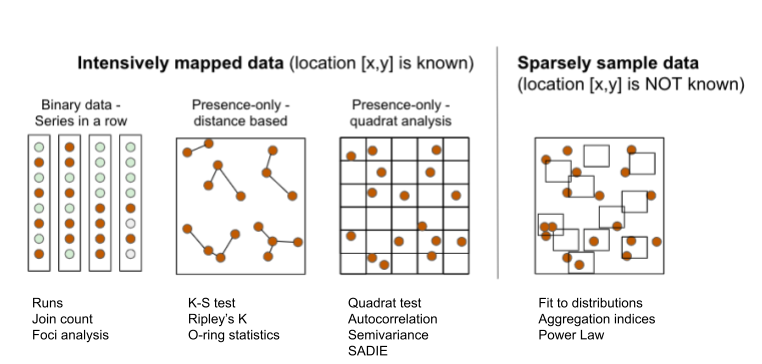
16.1 Intensively mapped
16.1.1 Binary data
In this situation the individual plants are mapped, meaning that their relative positions to one another are known. It is the case when a census is used to map presence/absence data. The status of each unit (usually a plant) is noted as a binary variable. The plant is either diseased (D or 1) or non-diseased or healthy (H or 0). Several statistical tests can be used to detect a deviation from randomness. The most commonly used tests are runs, doublets and join count.
16.1.1.1 Runs test
A run is defined as a succession of one or more diseased (D) or healthy (H) plants, which are followed and preceded by a plant of the other disease status or no plant at all (Madden 1982). There would be few runs if there is an aggregation of diseased or healthy plants and a large number of runs for a random mixing of diseased and healthy plants.
Let’s create a vector of binary (0 = non-diseased; 1 = diseased) data representing a crop row with 32 plants and assign it to y. For plotting purposes, we make a data frame for more complete information.
y1 <- c(1,1,1,0,0,0,0,0,0,0,0,0,0,1,1,0,0,0,1,1,1,1,1,0,0,1,1,1,1,0,0,0)
x1 <- c(1:32) # position of each plant
z1 <- 1
row1 <- data.frame(x1, y1, z1) # create a dataframeWe can then visualize the series using ggplot and count the number of runs as 8, aided by the different colors used to identify a run.
library(grid)
runs2 <- row1 |>
ggplot(aes(x1, z1, label = x1, color = factor(y1))) +
geom_point(shape = 15, size = 10) +
scale_x_continuous(breaks = max(z1)) +
scale_color_manual(values = c("gray70", "darkred")) +
geom_text(vjust = 0, nudge_y = 0.5) +
coord_fixed() +
ylim(0, 2.5) +
theme_void() +
theme(legend.position = "top")+
labs(color = "Status")
ggsave("imgs/runs2.png", runs2, width = 12, height = 2, bg = "white")
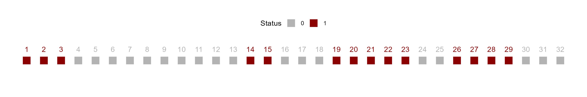
We can obtain the number of runs and related statistics using the oruns_test() function of the {r4pde}.
library(r4pde)
oruns_test(row1$y1)Ordinary Runs Test of Data Sequence:
-------------------------------------
Total Number of Runs (U): 8
Expected Number of Runs (EU): 16.75
Standard Deviation of Runs (sU): 2.74
Z-score: -3.20
P-value: 0.0007
Interpretation:
Based on the Z-score, the sequence exhibits 'aggregation or clustering'.16.1.1.2 Join count
In a joint count statistics, two adjacent plants may be classified by the type of join that links them: D-D, H-H or H-D. The number of joins of the specified type in the orientation(s) of interest is then counted. The question is whether the observed join-count is large (or small) relative to that expected for a random pattern. The join-count statistics provides a basic measure of spatial autocorrelation. The expected number of join counts can defined under randomness and the corresponding standard errors can be estimated after constants are calculated based on the number of rows and columns of the matrix.
Let’s use the join_count() function of the {r4pde} package to perform a join count test. The formulations in this function apply only for a rectangular array with no missing values, with the “rook” definition of proximity, and they were all presented in the book The Study of Plant Disease Epidemics, page 261 (Madden et al. 2007a).
Let’s create a series of binary data from left to right and top to bottom. The data is displayed in Fig. 9.13 in page 260 of the book (Madden et al. 2007a). In the example, there are 5 rows and 5 columns. This will be informed later to compose the matrix which is the data format for analysis.
m1 <- c(1,0,1,1,0,
1,1,0,0,0,
1,0,1,0,0,
1,0,0,1,0,
0,1,0,1,1)
matrix1 <- matrix(m1, 5, 5, byrow = TRUE)We can visualize the two-dimensional array by converting to a raster.
# Convert to raster
mapS2 <- terra::rast(matrix(matrix1, 5 , 5, byrow = TRUE))
# Convert to data frame
mapS3 <- terra::as.data.frame(mapS2, xy = TRUE)
mapS3 |>
ggplot(aes(x, y, label = lyr.1, fill = factor(lyr.1))) +
geom_tile(color = "white", linewidth = 0.5) +
theme_void() +
coord_fixed()+
labs(fill = "Status") +
scale_fill_manual(values = c("gray70", "darkred"))+
theme(legend.position = "top")
The function join_count() calculates spatial statistics for a matrix based on the specifications and calculations shown in the book (Madden et al. 2007a). It identifies patterns of aggregation for values in a binary matrix based on join count statistics. The results determine whether the observed spatial arrangement is aggregated or non-aggregated (random) based on a standard normal distribution test statistic Z-score applied separately for HD or DD sequences. For HD, Z-score lower than - 1.64 (more negative) is taken as a basis for rejection of hypothesis of randomness (P = 0.05). For DD sequences, Z-score greater than 1.64 indicates aggregation.
library(r4pde)
join_count(matrix1)Join Count Analysis of Spatial Patterns of Plant Diseases:
----------------------------------------------------------
1) 'HD' Sequences:
- Observed Count: 23
- Expected Count : 19.97
- Standard Deviation: 3.17
- Z-score: 0.80
The pattern for 'HD' sequences is 'not aggregated'.
2) 'DD' Sequences:
- Observed Count: 7
- Expected Count: 9.22
- Standard Deviation: 4.23
- Z-score: -0.41
The pattern for 'DD' sequences is 'not aggregated'.
----------------------------------------------------------In the example above, the observed count of HD sequence was larger than the expected count, so the Z-score suggests non aggregation, or randomness. The DD sequence observed count was lower than expected count, confirming non aggregation. Let’s repeat the procedure using the second array of data shown in the book chapter, for which the result is different. In this case, there is evidence of aggregation of diseased plants, because the observed DD is greater than expected and observed HD is lower than expected. The Z-score for HD is less than -1.64 (P< 0.05) and the Z-score for DD is greater than 1.64 (P < 0.05).
m2 <- c(1,1,1,0,0,
1,1,1,0,0,
1,1,1,0,0,
1,1,1,0,0,
0,0,0,0,0)
matrix2 <- matrix(m2, 5, 5, byrow = TRUE)
join_count(matrix2)Join Count Analysis of Spatial Patterns of Plant Diseases:
----------------------------------------------------------
1) 'HD' Sequences:
- Observed Count: 7
- Expected Count : 19.97
- Standard Deviation: 3.17
- Z-score: -4.24
The pattern for 'HD' sequences is 'aggregated'.
2) 'DD' Sequences:
- Observed Count: 17
- Expected Count: 9.22
- Standard Deviation: 4.23
- Z-score: 1.96
The pattern for 'DD' sequences is 'aggregated'.
----------------------------------------------------------We can apply these tests for a real example epidemic data provided by the {r4pde} R package. Let’s work with a portion of the intensively mapped data on the occurrence of gummy stem blight (GSB) of watermelon (Café-Filho et al. 2010).
library(r4pde)
gsb <- DidymellaWatermelon
gsb # A tibble: 1,344 × 4
dap NS_col EW_row severity
<int> <int> <int> <int>
1 50 1 1 0
2 50 1 2 0
3 50 1 3 0
4 50 1 4 0
5 50 1 5 0
6 50 1 6 0
7 50 1 7 0
8 50 1 8 0
9 50 1 9 0
10 50 1 10 0
# ℹ 1,334 more rowsThe inspection of the data frame shows four variables where dap is the day after planting, NS_col is the north-south direction, EW_row is the east-west direction and severity is the severity in ordinal score (0-4). Let’s produce a map for the 65 and 74 dap, but first we need to create the incidence variable based on severity.
gsb2 <- gsb |>
filter(dap %in% c(65, 74)) |>
mutate(incidence = case_when(severity > 0 ~ 1,
TRUE ~ 0))
gsb2 |>
ggplot(aes(NS_col, EW_row, fill = factor(incidence)))+
geom_tile(color = "white") +
coord_fixed() +
scale_fill_manual(values = c("gray70", "darkred")) +
facet_wrap( ~ dap) +
labs(fill = "Status")+
theme_void()+
theme(legend.position = "top")
Now w eshould check the number of rows (y) and columns (x) for further preparing the matrix for the join count statistics. The m65 object should be in the matrix format before running the join count test.
max(gsb2$NS_col)[1] 12max(gsb2$EW_row)[1] 16m65 <- gsb2 |>
filter(dap == 65) |>
pull(incidence) |>
matrix(12, 16, byrow = TRUE)
join_count(m65)Join Count Analysis of Spatial Patterns of Plant Diseases:
----------------------------------------------------------
1) 'HD' Sequences:
- Observed Count: 104
- Expected Count : 108.47
- Standard Deviation: 13.89
- Z-score: -0.36
The pattern for 'HD' sequences is 'not aggregated'.
2) 'DD' Sequences:
- Observed Count: 15
- Expected Count: 12.52
- Standard Deviation: 4.76
- Z-score: 0.63
The pattern for 'DD' sequences is 'not aggregated'.
----------------------------------------------------------We can apply the join count test for 74 dap. The result shows that the pattern is now aggregated, differing from 64 dap.
# Pull the binary sequence of time 2
m74 <- gsb2 |>
filter(dap == 74) |>
pull(incidence) |>
matrix(12, 16, byrow = TRUE)
join_count(m74)Join Count Analysis of Spatial Patterns of Plant Diseases:
----------------------------------------------------------
1) 'HD' Sequences:
- Observed Count: 110
- Expected Count : 155.67
- Standard Deviation: 11.91
- Z-score: -3.88
The pattern for 'HD' sequences is 'aggregated'.
2) 'DD' Sequences:
- Observed Count: 58
- Expected Count: 37.12
- Standard Deviation: 8.85
- Z-score: 2.42
The pattern for 'DD' sequences is 'aggregated'.
----------------------------------------------------------16.1.1.3 Foci analysis
The Analysis of Foci Structure and Dynamics (AFSD), introduced by (Nelson 1996) and further expanded by (Laranjeira et al. 1998), was used in several studies on citrus diseases in Brazil. In this analysis, the data come from incidence maps where both the diseased and no-diseased trees are mapped in the 2D plane (Jesus Junior and Bassanezi 2004; Laranjeira et al. 2004).
Here is an example of an incidence map with four foci (adapted from (Laranjeira et al. 1998)). The data is organized in the wide format where the first column x is the index for the row and each column is the position of the plant within the row. The 0 and 1 represent the non-diseased and diseased plant, respectively.
foci <- tibble::tribble(
~x, ~`1`, ~`2`, ~`3`, ~`4`, ~`5`, ~`6`, ~`7`, ~`8`, ~`9`,
1, 0, 0, 0, 0, 0, 0, 0, 0, 0,
2, 1, 1, 1, 0, 0, 0, 0, 1, 0,
3, 1, 1, 1, 0, 0, 0, 1, 1, 1,
4, 0, 1, 1, 0, 0, 0, 0, 1, 0,
5, 0, 1, 1, 0, 0, 0, 0, 0, 0,
6, 0, 0, 0, 1, 0, 0, 0, 0, 0,
7, 0, 0, 0, 0, 0, 0, 0, 0, 0,
8, 0, 0, 0, 0, 0, 0, 0, 0, 0,
9, 0, 0, 0, 0, 0, 1, 0, 1, 0,
10, 0, 0, 0, 0, 0, 0, 1, 0, 0,
11, 0, 1, 0, 0, 0, 1, 0, 1, 0,
12, 0, 0, 0, 0, 0, 0, 0, 0, 0
)Since the data frame is in the wide format, we need to reshape it to the long format using pivot_longer function of the tidyr package before plotting using ggplot2 package.
library(tidyr)
foci2 <- foci |>
pivot_longer(2:10, names_to = "y", values_to = "i")
foci2# A tibble: 108 × 3
x y i
<dbl> <chr> <dbl>
1 1 1 0
2 1 2 0
3 1 3 0
4 1 4 0
5 1 5 0
6 1 6 0
7 1 7 0
8 1 8 0
9 1 9 0
10 2 1 1
# ℹ 98 more rowsNow we can make the plot.
library(ggplot2)
foci2 |>
ggplot(aes(x, y, fill = factor(i)))+
geom_tile(color = "black")+
scale_fill_manual(values = c("grey70", "darkred"))+
theme_void()+
coord_fixed()+
theme(legend.position = "none")
In the above plot, the upper left focus is composed of four diseased plants with a pattern of vertical and horizontal proximity to the central unit (or the Rook’s case). The upper right focus, also with four diseased plants denotes a pattern of longitudinal proximity to the central unit (or the Bishop’s case). The lower left focus is composed of 11 diseased plants with 4 rows and 6 columns occupied by the focus; the shape index of the focus (SIF) is 1.25 and the compactness index of the focus (CIF) is 0.55. The lower right is a single-unit focus.
In this analysis, several statistics can be summarized, both at the single focus and averaging across all foci in the area, including:
Number of foci (NF) and number of single focus (NSF)
To compare maps with different number of plants, NF and NSF can be normalized to 1000 plants as NF1000 and NSF1000
Number of plants in each focus i (NPFi)
Maximum number of rows of the focus i (rfi) and maximum number of columns of the focus i (cfi)
Mean shape index of foci (meanSIF = [∑(fri / cfi)]/NF), where SIF values equal to 1.0 indicate isodiametrical foci; values greater than 1.0 indicate foci with greater length in the direction between the planting rows and values less than 1 indicate foci with greater length in the direction of the planting row.
Mean compactness index of foci (meanCIF = [∑(NPFi/rfi*cfi)]/NF), where CIF values close to 1.0 indicate a more compact foci, that is, greater aggregation and proximity among all the plants belonging to the focus
We can obtain the above-mentioned foci statistics using the AFSD function of the r4pde package. Let’s calculate for the foci2 dataset already loaded, but first we need to check whether all variables are numeric or integer.
str(foci2) # y was not numerictibble [108 × 3] (S3: tbl_df/tbl/data.frame)
$ x: num [1:108] 1 1 1 1 1 1 1 1 1 2 ...
$ y: chr [1:108] "1" "2" "3" "4" ...
$ i: num [1:108] 0 0 0 0 0 0 0 0 0 1 ...foci2$y <- as.integer(foci2$y) # transform to numeric
library(r4pde)
result_foci <- AFSD(foci2)The AFSD function returns a list of three data frames. The first is a summary statistics of this analysis, together with the disease incidence (DIS_INC), for the data frame in analysis.
knitr::kable(result_foci[[1]])| stats | value |
|---|---|
| NF | 4.0000000 |
| NF1000 | 37.0370370 |
| NSF | 1.0000000 |
| NSF1000 | 9.2592593 |
| DIS_INC | 0.2037037 |
| mean_SIF | 1.0625000 |
| mean_CIF | 0.6652778 |
The second object in the list is a data frame with statistics at the focus level, including the number of rows and columns occupied by each focus as well as the two indices for each focus: shape and compactness.
knitr::kable(result_foci[[2]])| focus_id | size | rows | cols | SIF | CIF |
|---|---|---|---|---|---|
| 1 | 11 | 4 | 5 | 0.8 | 0.5500000 |
| 2 | 5 | 3 | 3 | 1.0 | 0.5555556 |
| 3 | 5 | 3 | 3 | 1.0 | 0.5555556 |
| 4 | 1 | 1 | 1 | 1.0 | 1.0000000 |
The third object is the original data frame amended with the id for each focus which can be plotted and labelled (the focus ID) using the plot_AFSD() function.
foci_data <- result_foci[[3]]
foci_data# A tibble: 22 × 4
x y i focus_id
<dbl> <int> <dbl> <dbl>
1 2 1 1 1
2 2 2 1 1
3 2 3 1 1
4 2 8 1 2
5 3 1 1 1
6 3 2 1 1
7 3 3 1 1
8 3 7 1 2
9 3 8 1 2
10 3 9 1 2
# ℹ 12 more rowsThe plot shows the ID for each focus.
plot_AFSD(foci_data)+
theme_void()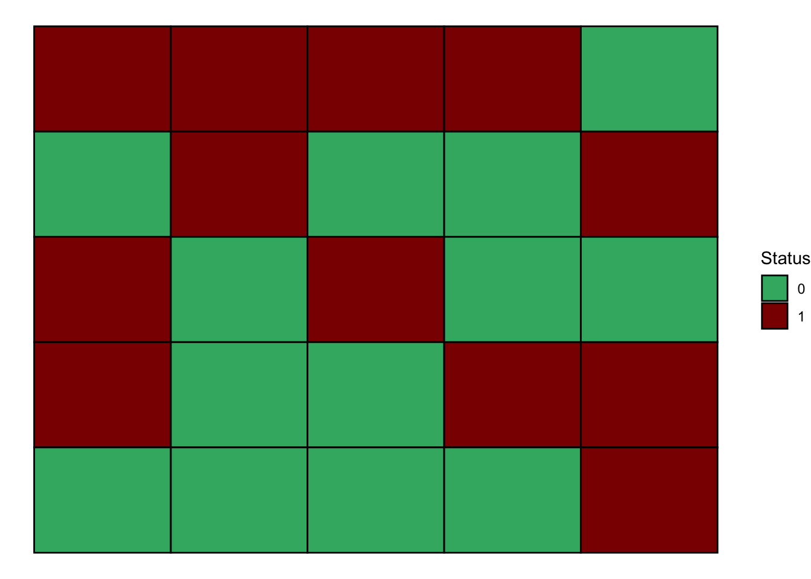
We will now analyse the gummy stem blight dataset again focusing on 65 and 74 dap. We first need to prepare the data for the analysis by getting the x, y and i vectors in the dataframe.
library(r4pde)
gsb65 <- DidymellaWatermelon |>
filter(dap %in% c(65)) |>
mutate(incidence = case_when(severity > 0 ~ 1,
TRUE ~ 0)) |>
select(EW_row, NS_col, incidence) |>
rename(x = EW_row, y = NS_col, i = incidence)Now we can run the AFSD function and obtain the statistics.
result_df1 <- AFSD(gsb65)
knitr::kable(result_df1[[1]])| stats | value |
|---|---|
| NF | 12.0000000 |
| NF1000 | 62.5000000 |
| NSF | 2.0000000 |
| NSF1000 | 10.4166667 |
| DIS_INC | 0.1875000 |
| mean_SIF | 1.0722222 |
| mean_CIF | 0.7162037 |
This analysis is usually applied to multiple maps and the statistics are visually related to the incidence in the area in a scatter plot. Let’s calculate the statistics for the two dap . We can split it by dap before applying the function. We can do it using the map function of the purrr package.
library(purrr)
gsb65_74 <- DidymellaWatermelon |>
filter(dap %in% c(65, 74)) |>
mutate(incidence = case_when(severity > 0 ~ 1,
TRUE ~ 0)) |>
select(dap, EW_row, NS_col, incidence) |>
rename(dap = dap, x = EW_row, y = NS_col, i = incidence)
# Split the dataframe by 'time'
df_split <- split(gsb65_74, gsb65_74$dap)
# Apply the AFSD function to each split dataframe
results <- map(df_split, AFSD)We can check the summary results for time 2 and time 3.
time65 <- data.frame(results[[1]][1])
knitr::kable(time65)| stats | value |
|---|---|
| NF | 12.0000000 |
| NF1000 | 62.5000000 |
| NSF | 2.0000000 |
| NSF1000 | 10.4166667 |
| DIS_INC | 0.1875000 |
| mean_SIF | 1.0722222 |
| mean_CIF | 0.7162037 |
time74 <- data.frame(results[[2]][1])
knitr::kable(time74)| stats | value |
|---|---|
| NF | 10.0000000 |
| NF1000 | 52.0833333 |
| NSF | 2.0000000 |
| NSF1000 | 10.4166667 |
| DIS_INC | 0.3229167 |
| mean_SIF | 1.1338095 |
| mean_CIF | 0.7525022 |
# Plot the results to see the two foci in time 1
plot_AFSD(results[[1]][[3]])+
theme_void()+
coord_fixed()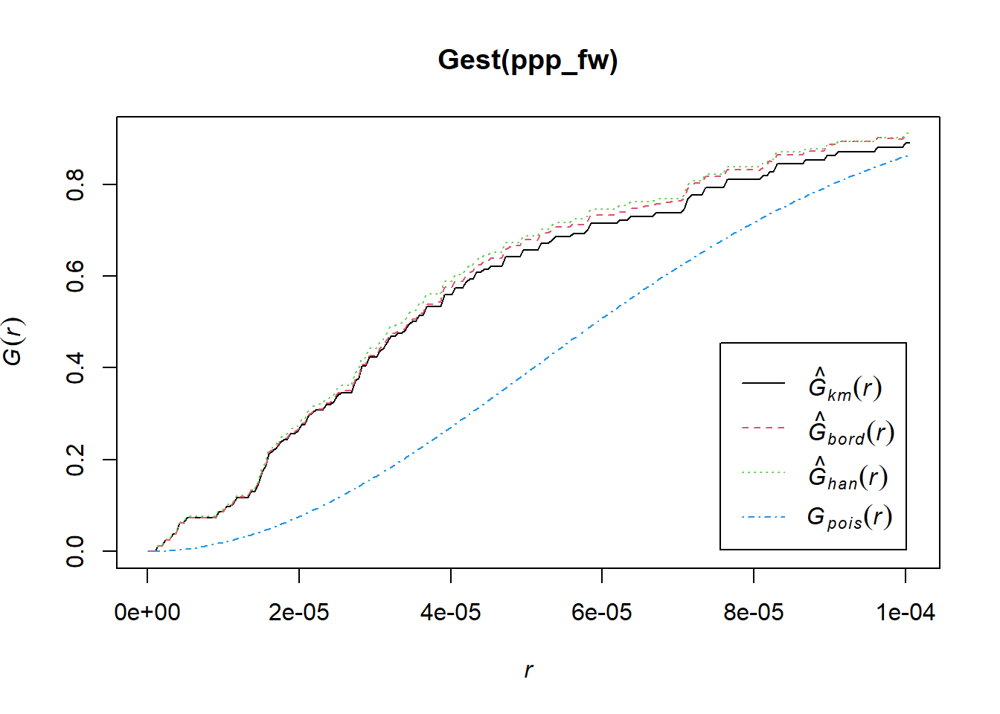
# Plot time 2
plot_AFSD(results[[2]][[3]])+
theme_void()+
coord_fixed()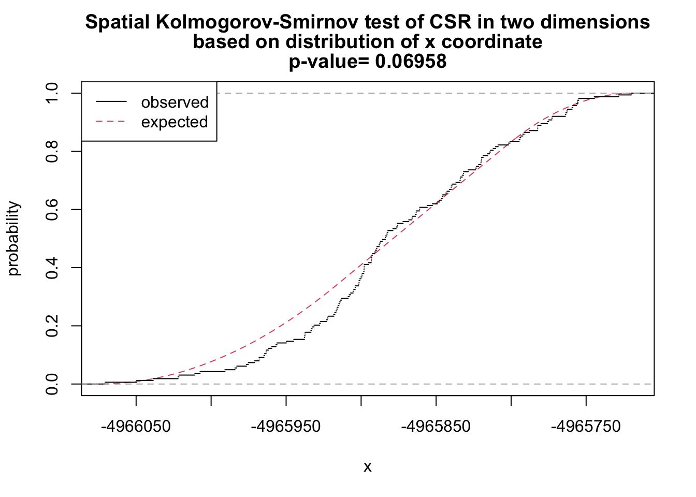
16.1.2 Point pattern analysis
Point pattern analysis involves the study of the spatial arrangement of points in a two-dimensional space. In its simplest form, one can visualize this as a scatter plot on a map, where each point represents an event, object, or entity in space. For example, the points might represent the locations of diseased plants in a population.
The easiest way to visualize a 2-D point pattern is to produce a map of the locations, which is simply a scatter plot but with the provision that the axes are equally scaled. However, while the visualization can provide a basic understanding of the spatial distribution, the real power of point pattern analysis lies in the quantitative methods that allow one to analyze the distribution in a more detailed and systematic way. These methods help to identify whether the points are randomly distributed, clustered (points are closer together than expected by chance), or regularly spaced (points are more evenly spaced than expected by chance). This analysis can provide insights into underlying processes that might explain the observed patterns.
Let’s work with two simulated datasets that were originally generated to produced a random or an aggregated (clustered) pattern.
library(r4pde)
rand <- SpatialRandom
aggr <- SpatialAggregatedLet’s produce 2-D map for each data frame.
prand <- rand |>
ggplot(aes(x, y))+
geom_point()+
scale_color_manual(values = c("black", NA))+
coord_fixed()+
coord_flip()+
theme_r4pde(font_size = 12)+
theme(legend.position = "none")+
labs (title = "Random",
x = "Latitude",
y = "Longitude",
caption = "Source: r4pd R package")
paggr <- aggr |>
ggplot(aes(x, y))+
geom_point()+
scale_color_manual(values = c("black", NA))+
coord_fixed()+
coord_flip()+
theme_r4pde(font_size = 12)+
theme(legend.position = "none")+
labs (title = "Aggregated",
x = "Latitude",
y = "Longitude",
caption = "Source: r4pd R package")
library(patchwork)
prand | paggr
16.1.2.1 Quadrat count
In the Quadrat Count method, the study region is divided into a regular grid of smaller, equally-sized rectangular or square subregions known as quadrats. For each quadrat, the number of points falling inside it is counted. If the points are uniformly and independently distributed across the region (i.e., random), then the number of points in each quadrat should follow a Poisson distribution. If the variance of the counts is roughly equal to the mean of the counts, then the pattern is considered to be random. If the variance is greater than the mean, it suggests that the pattern is aggregated or clumped.
Using the {spatstats} package, we first need to create a ppp object which represents a point pattern. This is the primary object type in spatstat for point patterns.
library(spatstat)
### Create rectangular window around the points
window_rand <- bounding.box.xy(rand$x, rand$y)
# create the point pattern object
ppp_rand <- ppp(rand$x, rand$y, window_rand)
plot(ppp_rand)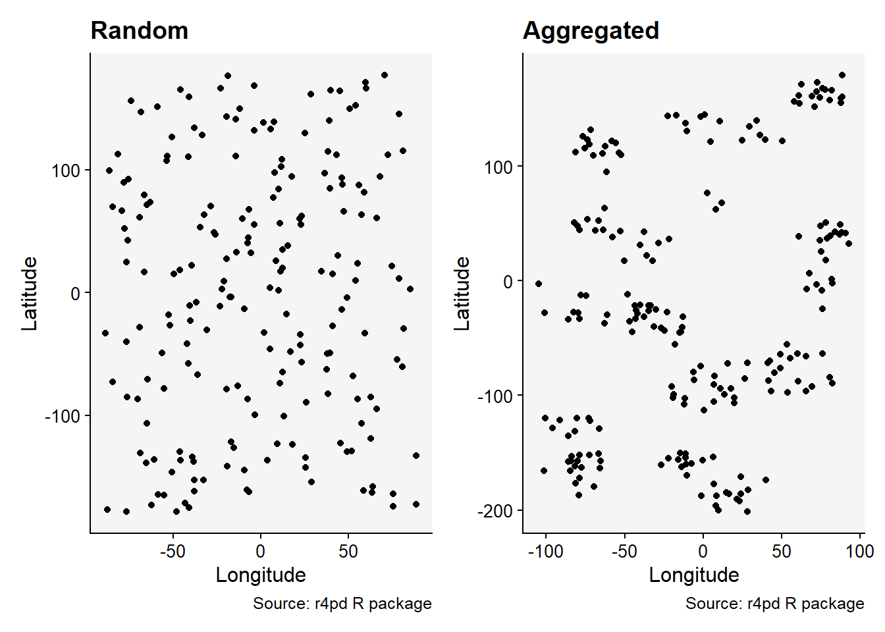
Using the quadratcount function, we can divide the study region into a grid and count the number of points in each cell:
## Quadrat count 8 x 8
qq <- quadratcount(ppp_rand,8,8, keepempty = TRUE)
# plot the quadrat count
plot(qq)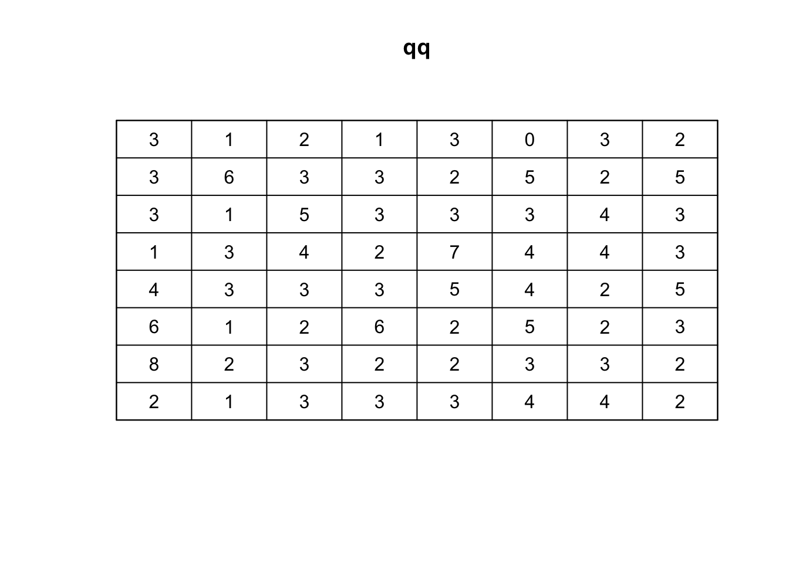
To determine whether the observed distribution of points is consistent with a random Poisson process, we can use thequadrat.test function:
# Quadrat test
qt <- quadrat.test(qq, alternative="clustered", method="M")
qt
Conditional Monte Carlo test of CSR using quadrat counts
Test statistic: Pearson X2 statistic
data:
X2 = 47.04, p-value = 0.9375
alternative hypothesis: clustered
Quadrats: 8 by 8 grid of tilesThe result will give a Chi-squared statistic and a p-value. If the p-value is very low, then the pattern is likely not random. Keep in mind that the choice of the number and size of quadrats can affect the results. It’s often helpful to try a few different configurations to ensure robust conclusions.
Lets repeat this procedure for the situation of aggregated data.
### Create a rectangular window around the points
window_aggr <- bounding.box.xy(aggr$x, aggr$y)
# create the point pattern object
ppp_aggr <- ppp(aggr$x, aggr$y, window_aggr)
plot(ppp_aggr)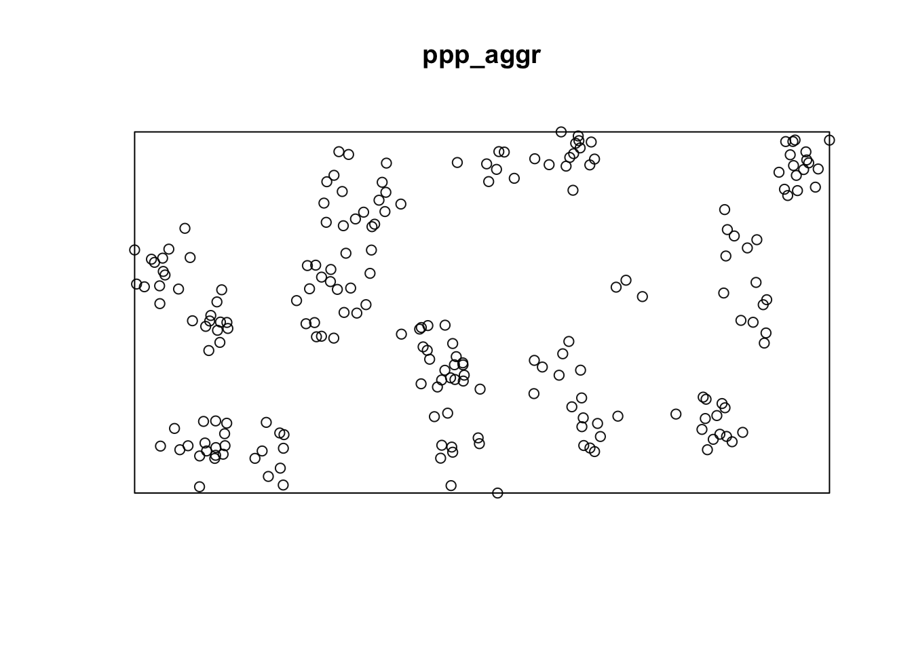
## Quadrat count 8 x 8
qq_aggr <- quadratcount(ppp_aggr,8,8, keepempty=TRUE)
# plot the quadrat count
plot(qq_aggr)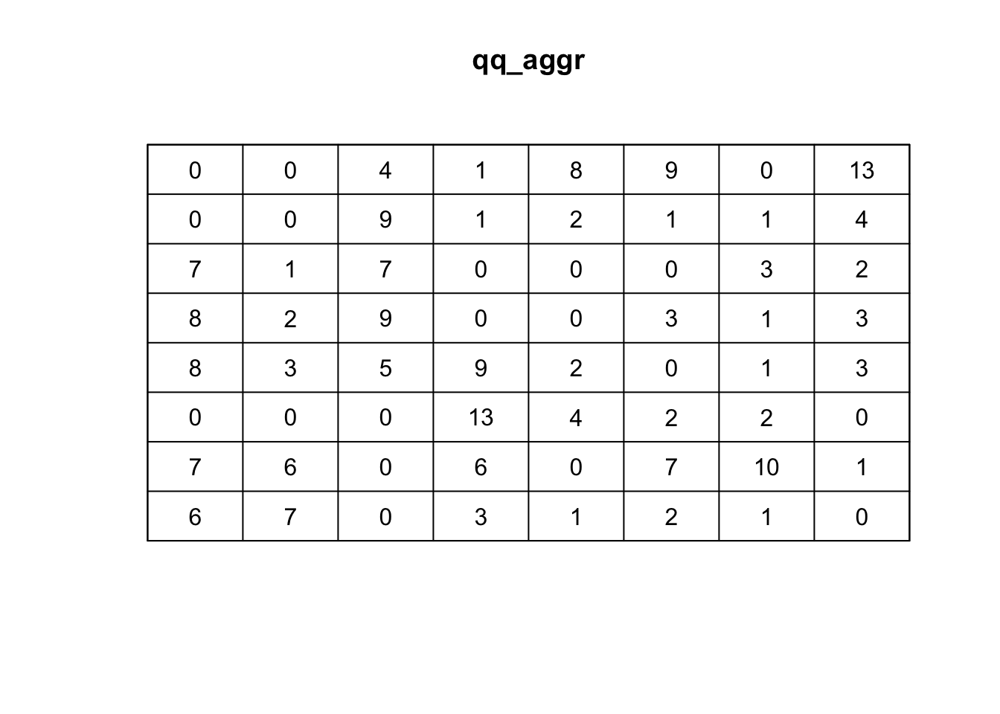
# Quadrat test
qt_aggr <- quadrat.test(qq_aggr, alternative="clustered", method="M")
qt_aggr
Conditional Monte Carlo test of CSR using quadrat counts
Test statistic: Pearson X2 statistic
data:
X2 = 244.92, p-value = 5e-04
alternative hypothesis: clustered
Quadrats: 8 by 8 grid of tiles16.1.2.2 Spatial KS test
The Spatial Kolmogorov-Smirnov (KS) Test is a method to assess the goodness-of-fit of a given point pattern to the assumptions of Complete Spatial Randomness (CSR) Baddeley et al. (2005). Essentially, this means that it helps in determining whether a set of spatial points is distributed randomly or if there is some underlying pattern or interaction.
However, unlike other goodness-of-fit tests in the spatial context, the Spatial KS Test leverages the values of a spatial covariate at the observed data points and contrasts them against the expected distribution of the same covariate under the assumption of CSR. The idea behind this test is to check if there’s any difference between the observed distribution of a spatial covariate’s values and the expected distribution if the points were distributed in a completely spatial random fashion.
Key points of the test are:
Covariate: For this test, a spatial covariate must be chosen. This is a spatially varying feature or value that might influence the point process. Examples include elevation, soil quality, or distance from a specific feature. The distribution of this covariate’s values at the observed data points is the crux of the test.
Comparison with CSR: The observed distribution of the spatial covariate’s values at the data points is juxtaposed with what would be expected under the CSR model. The CSR model posits that points are distributed purely by chance, without any underlying structure or influence.
Methodology: The test employs a classical goodness-of-fit approach to contrast the observed and expected distributions. Specifically, it utilizes the Kolmogorov-Smirnov statistic, a non-parametric measure to gauge the similarity between two distributions.
As example, we may want to select spatial coordinates themselves (like x, y, or both) as the covariates. This means the test will assess how the observed distribution of x-coordinates (or y-coordinates or both) of the data points compares to what would be anticipated under CSR.
Let’s test for the aggregated data.
# y as covariate
ks_y <- cdf.test(ppp_aggr, test="ks", "y", jitter=FALSE)
ks_y
Spatial Kolmogorov-Smirnov test of CSR in two dimensions
data: covariate 'y' evaluated at points of 'ppp_aggr'
and transformed to uniform distribution under CSR
D = 0.070995, p-value = 0.2453
alternative hypothesis: two-sidedplot(ks_y)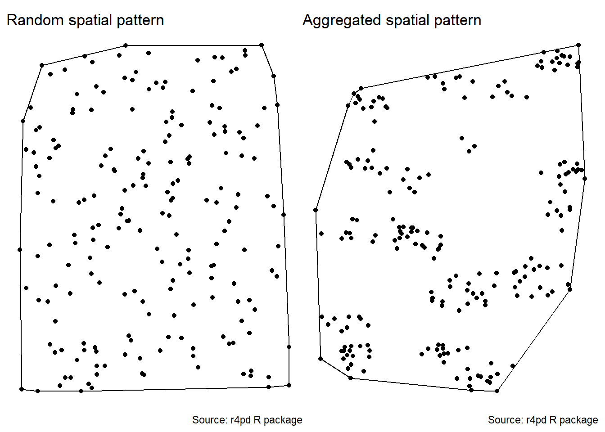
# x as covariate
ks_x <- cdf.test(ppp_aggr, test="ks", "x", jitter=FALSE)
ks_x
Spatial Kolmogorov-Smirnov test of CSR in two dimensions
data: covariate 'x' evaluated at points of 'ppp_aggr'
and transformed to uniform distribution under CSR
D = 0.093863, p-value = 0.0512
alternative hypothesis: two-sidedplot(ks_x)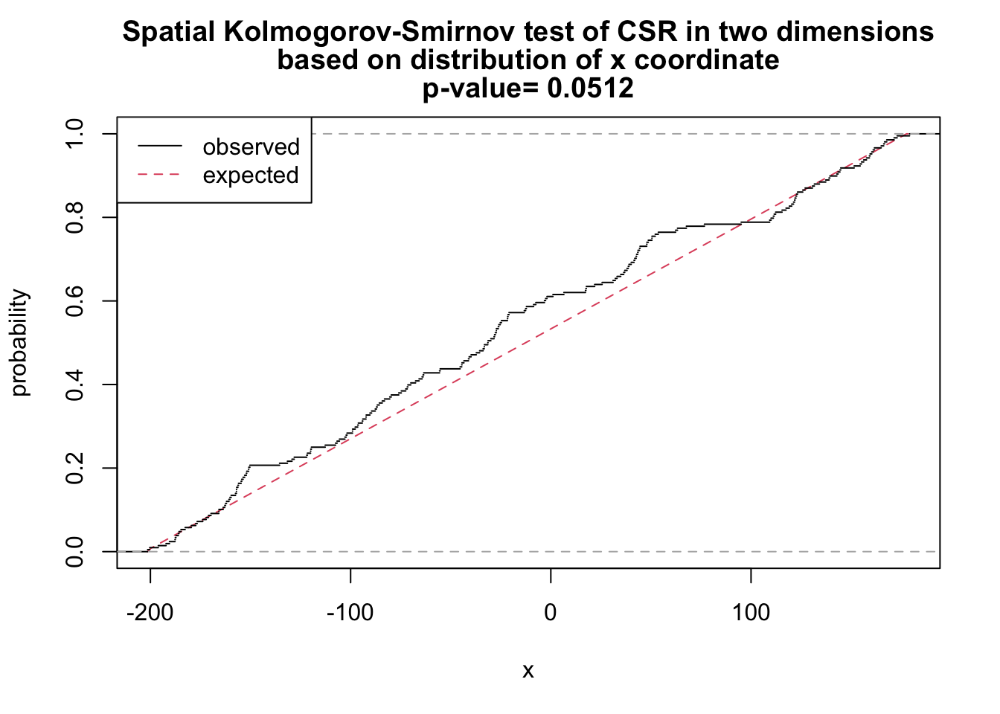
# x and y as covariates
fun <- function(x,y){2* x + y}
ks_xy <- cdf.test(ppp_aggr, test="ks", fun, jitter=FALSE)
ks_xy
Spatial Kolmogorov-Smirnov test of CSR in two dimensions
data: covariate 'fun' evaluated at points of 'ppp_aggr'
and transformed to uniform distribution under CSR
D = 0.12687, p-value = 0.002471
alternative hypothesis: two-sidedplot(ks_xy)
As shown above, we have sufficient evidence to reject the null hypothesis of complete spatial randomness.
16.1.2.3 Distance based
16.1.2.3.1 Ripley’s K
A spatial point process is a set of irregularly distributed locations within a defined region which are assumed to have been generated by some form of stochastic mechanism. The K function, a.k.a. Ripley’s K-function, is a statistical measure used in spatial analysis to examine the spatial distribution of a single type of point in a given area. Named after its developer, the British statistician B.D. Ripley, the K-function measures the expected number of points within a given distance of an arbitrary point, assuming homogeneous intensity (a constant probability of a point occurring in a particular place).
To describe it simply: imagine you have a map of diseased trees in a forest, and you select a tree at random. The K-function helps you answer the question: “How many other diseased trees do I expect to find within a certain distance from the diseased tree I’ve chosen?”
The K-function is often used to identify and analyze patterns within spatial data, such as clustering, randomness, or regularity (dispersion). It is particularly useful because it looks at the distribution at all scales (distances) simultaneously. To interpret the results of Ripley’s K-function:
Random distribution: If the points (like trees in our example) are randomly distributed, the plot of the K-function will be a straight line at a 45-degree angle.
Clustered distribution: If the points are clustered (grouped closer together than you’d expect by chance), the plot will be above the 45-degree line of the random expectation.
Regular or dispersed distribution: If the points are regularly spaced or dispersed (further apart than you’d expect by chance), the plot will be below the 45-degree line.
Ripley’s K checks the density of diseased units in each area by the variance as a function of radial distances (r) from the diseased unit, hence K(r). If the spatial localization of a diseased unit is independent, the process is random in space.
Let’s use the Kest function of the spatstat package to obtain K(r).
k_rand <- Kest(ppp_rand)
plot(k_rand)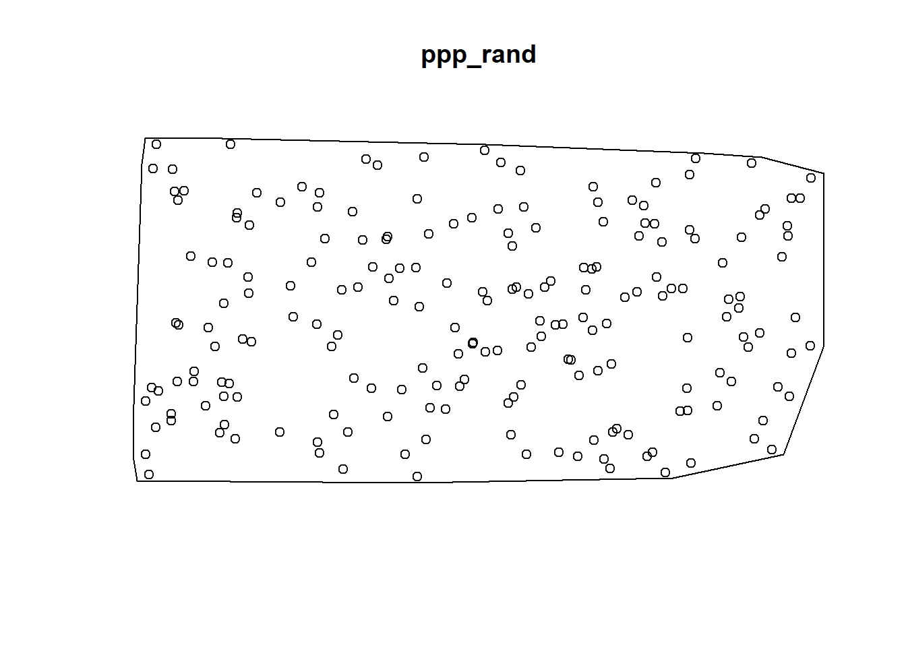
k_aggr <- Kest(ppp_aggr)
plot(k_aggr)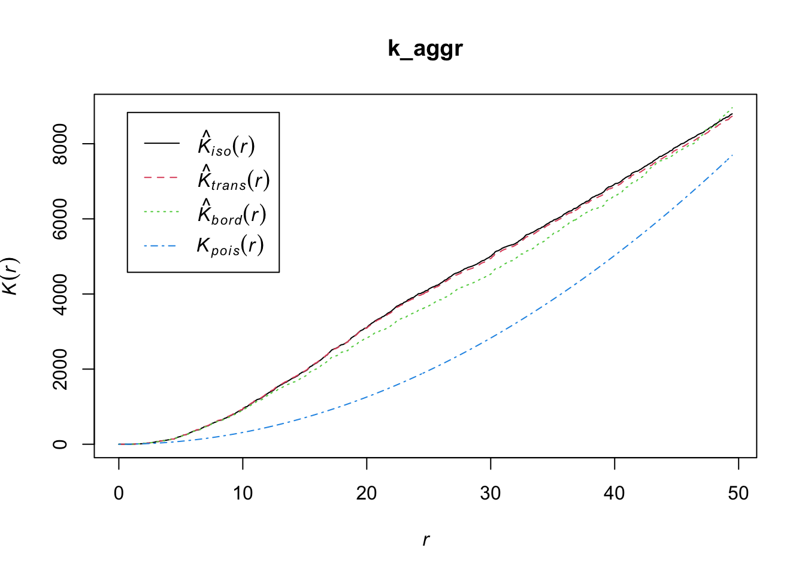
The envelope function performs simulations and computes envelopes of a summary statistic based on the simulations. The envelope can be used to assess the goodness-of-fit of a point process model to point pattern data (Baddeley et al. 2014). Let’s simulate the envelope and plot the values using ggplot. Because observed K(r) (solid line) lied outside the simulation envelope, aggregation was detected.
ke <- envelope(ppp_aggr, fun = Kest)Generating 99 simulations of CSR ...
1, 2, 3, 4, 5, 6, 7, 8, 9, 10, 11, 12, 13, 14, 15, 16, 17, 18, 19, 20,
21, 22, 23, 24, 25, 26, 27, 28, 29, 30, 31, 32, 33, 34, 35, 36, 37, 38, 39, 40,
41, 42, 43, 44, 45, 46, 47, 48, 49, 50, 51, 52, 53, 54, 55, 56, 57, 58, 59, 60,
61, 62, 63, 64, 65, 66, 67, 68, 69, 70, 71, 72, 73, 74, 75, 76, 77, 78, 79, 80,
81, 82, 83, 84, 85, 86, 87, 88, 89, 90, 91, 92, 93, 94, 95, 96, 97, 98,
99.
Done.data.frame(ke) |>
ggplot(aes(r, theo))+
geom_line(linetype =2)+
geom_line(aes(r, obs))+
geom_ribbon(aes(ymin = lo, ymax = hi),
fill = "steelblue", alpha = 0.5)+
labs(y = "K(r)", x = "r")+
theme_r4pde(font_size = 16)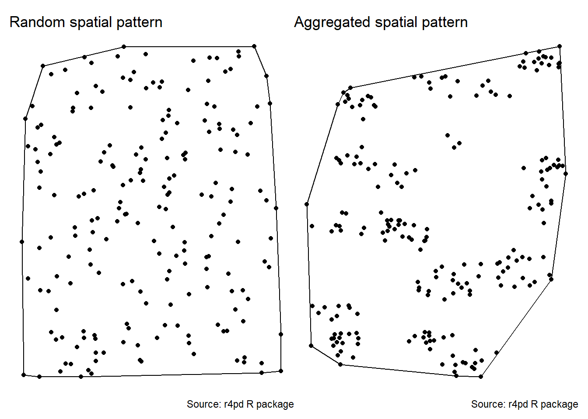
mad.test performs the ‘global’ or ‘Maximum Absolute Deviation’ test described by Ripley (1977, 1981). See (Baddeley et al. 2014). This performs hypothesis tests for goodness-of-fit of a point pattern data set to a point process model, based on Monte Carlo simulation from the model.
# Maximum absolute deviation test
mad.test(ppp_aggr, Kest)Generating 99 simulations of CSR ...
1, 2, 3, 4, 5, 6, 7, 8, 9, 10, 11, 12, 13, 14, 15, 16, 17, 18, 19, 20,
21, 22, 23, 24, 25, 26, 27, 28, 29, 30, 31, 32, 33, 34, 35, 36, 37, 38, 39, 40,
41, 42, 43, 44, 45, 46, 47, 48, 49, 50, 51, 52, 53, 54, 55, 56, 57, 58, 59, 60,
61, 62, 63, 64, 65, 66, 67, 68, 69, 70, 71, 72, 73, 74, 75, 76, 77, 78, 79, 80,
81, 82, 83, 84, 85, 86, 87, 88, 89, 90, 91, 92, 93, 94, 95, 96, 97, 98,
99.
Done.
Maximum absolute deviation test of CSR
Monte Carlo test based on 99 simulations
Summary function: K(r)
Reference function: theoretical
Alternative: two.sided
Interval of distance values: [0, 49.477517555]
Test statistic: Maximum absolute deviation
Deviation = observed minus theoretical
data: ppp_aggr
mad = 2234.7, rank = 1, p-value = 0.01mad.test(ppp_rand, Kest)Generating 99 simulations of CSR ...
1, 2, 3, 4, 5, 6, 7, 8, 9, 10, 11, 12, 13, 14, 15, 16, 17, 18, 19, 20,
21, 22, 23, 24, 25, 26, 27, 28, 29, 30, 31, 32, 33, 34, 35, 36, 37, 38, 39, 40,
41, 42, 43, 44, 45, 46, 47, 48, 49, 50, 51, 52, 53, 54, 55, 56, 57, 58, 59, 60,
61, 62, 63, 64, 65, 66, 67, 68, 69, 70, 71, 72, 73, 74, 75, 76, 77, 78, 79, 80,
81, 82, 83, 84, 85, 86, 87, 88, 89, 90, 91, 92, 93, 94, 95, 96, 97, 98,
99.
Done.
Maximum absolute deviation test of CSR
Monte Carlo test based on 99 simulations
Summary function: K(r)
Reference function: theoretical
Alternative: two.sided
Interval of distance values: [0, 44.352774865]
Test statistic: Maximum absolute deviation
Deviation = observed minus theoretical
data: ppp_rand
mad = 106.7, rank = 87, p-value = 0.8716.1.2.3.2 O-ring statistics
Another statistics that can be used is the O-ring statitics which are used in spatial analysis to quantify and test the degree of interaction between two types of spatial points (Wiegand and A. Moloney 2004). The name derives from the method of placing a series of concentric circles (O-rings) around each point of type 1 and counting how many points of type 2 fall within each ring. The plot generated by O-ring statistics is called an O-ring plot or an O-function plot. It plots the radius of the rings on the x-axis and the estimated intensity of points of type 2 around points of type 1 on the y-axis.
Interpreting the plot is as follows:
Random pattern: If points of type 2 are randomly distributed around points of type 1, the O-ring plot will be a flat line. This means that the intensity of points of type 2 does not change with the distance to points of type 1.
Aggregation or clustering: If points of type 2 are aggregated around points of type 1, the O-ring plot will be an upward-sloping curve. This indicates that the intensity of points of type 2 increases with proximity to points of type 1.
Dispersion: If points of type 2 are dispersed away from points of type 1, the O-ring plot will be a downward-sloping curve. This shows that the intensity of points of type 2 decreases as you get closer to points of type 1.
The O-ring plot often includes a confidence envelope. If the O-ring statistic falls within this envelope, it suggests that the observed pattern could be the result of random spatial processes. If it falls outside the envelope, it suggests that the pattern is not random. Therefore, to decide whether a pattern is aggregated or random using O-ring statistics:
Look at the shape of the O-ring plot.
Compare the O-ring statistic to the confidence envelope.
An aggregated pattern will show an increasing curve that lies outside the confidence envelope, indicating that the density of type 2 points is higher close to type 1 points. On the other hand, a random pattern will show a flat line that lies within the confidence envelope, indicating no significant difference in the density of type 2 points around type 1 points at varying distances.
In R, we can use the estimate_o_ring() function of the onpoint package. We will use the point pattern object ppp_fw used in the previous examples
library(onpoint)
plot(estimate_o_ring(ppp_rand))
plot(estimate_o_ring(ppp_aggr))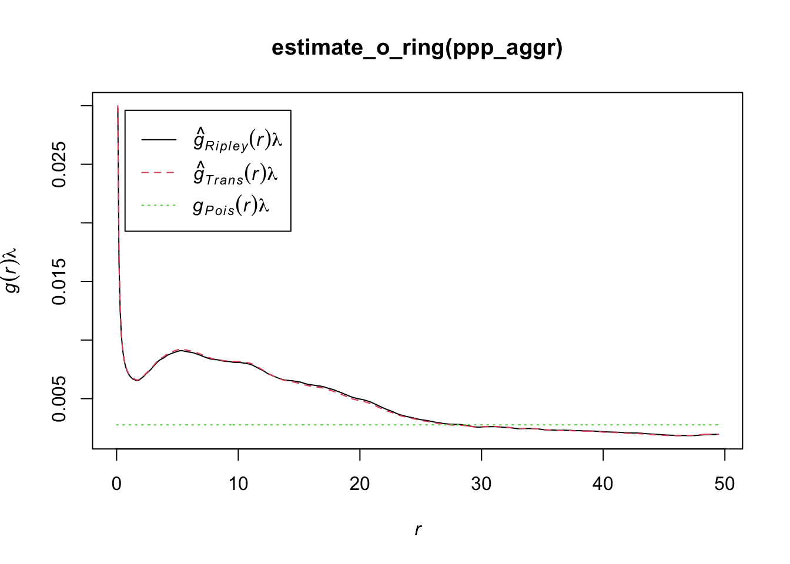
The function can be used in combination with spatstat’s envelope() function.
oring_envelope <- envelope(ppp_aggr, fun = estimate_o_ring, nsim = 199, verbose = FALSE)
plot(oring_envelope)
To plot simulation envelopes using quantum plots (Esser et al. 2014), just pass an envelope object as input to plot_quantums().
plot_quantums(oring_envelope, ylab = "O-ring")+
theme_r4pde()
16.1.3 Grouped data
If the data are intensively mapped, meaning that the spatial locations of the sampling units are known, we are not limited to analyse presence/absence (incidence) only data at the unit level. The sampling units may be quadrats where the total number of plants and the number of disease plants (or number of pathogen propagules) are known. Alternatively, it could be a continuous measure of severity. The question here, similar to the previous section, is whether a plant being diseased makes it more (or less) likely that neighboring plants will be diseased. If that is the case, diseased plants are exhibiting spatial autocorrelation. The most common methods are:
Autocorrelation (known as Moran’s I)
Semivariance
SADIE (an alternative approach to autocorrelation.)
16.1.3.1 Autocorrelation
Spatial autocorrelation analysis provides a quantitative assessment of whether a large value of disease intensity in a sampling unit makes it more (positive autocorrelation) or less (negative auto- correlation) likely that neighboring sampling units tend to have a large value of disease intensity (Madden et al. 2007a).
We will illustrate the basic concept by reproducing the example provided in page 264 of the chapter on spatial analysis (Madden et al. 2007a), which was extracted from table 11.3 of Campbell and Madden. L. (1990). The data represent a single transect with the number of Macrophomia phaseolina propagules per 10 g air-dry soil recorded in 16 contiguous quadrats across a field.
mp <- data.frame(
i = c(1:16),
y = c(41, 60, 81, 22, 8, 20, 28, 2, 0, 2, 2, 8, 0, 43, 61, 50)
)
mp i y
1 1 41
2 2 60
3 3 81
4 4 22
5 5 8
6 6 20
7 7 28
8 8 2
9 9 0
10 10 2
11 11 2
12 12 8
13 13 0
14 14 43
15 15 61
16 16 50We can produce a plot to visualize the number of propagules across the transect.
mp |>
ggplot(aes(i, y)) +
geom_col(fill = "darkred") +
theme_r4pde()+
labs(
x = "Relative position within a transect",
y = "Number of propagules",
caption = "Source: Campbell and Madden (1990)"
)
To calculate the autocorrelation coefficient in R, we can use the ac() function of the tseries package.
library(tseries)
ac_mp <- acf(mp$y, lag = 5, pl = FALSE)
ac_mp
Autocorrelations of series 'mp$y', by lag
0 1 2 3 4 5
1.000 0.586 0.126 -0.033 -0.017 -0.181 Let’s store the results in a data frame to facilitate visualization.
ac_mp_dat <- data.frame(index = ac_mp$lag, ac_mp$acf)
ac_mp_dat index ac_mp.acf
1 0 1.00000000
2 1 0.58579374
3 2 0.12636306
4 3 -0.03307249
5 4 -0.01701392
6 5 -0.18092810And now the plot known as autocorrelogram.
ac_mp_dat |>
ggplot(aes(index, ac_mp.acf, label = round(ac_mp.acf, 3))) +
geom_col(fill = "darkred") +
theme_r4pde()+
geom_text(vjust = 0, nudge_y = 0.05) +
scale_x_continuous(n.breaks = 6) +
geom_hline(yintercept = 0) +
labs(x = "Distance lag", y = "Autocorrelation coefficient")
The values we obtained here are not the same but quite close to the values reported in Madden et al. (2007b). For the transect data, the calculated coefficients in the book example for lags 1, 2 and 3 are 0.625, 0.144, and - 0.041. The conclusion is the same, the smaller the distance between sampling units, the stronger is the correlation between the count values.
16.1.3.1.1 Moran’s I
The method above is usually referred to Moran’s I (Moran 1950), a widely-used statistic to measure spatial autocorrelation in spatial datasets. The presence of spatial autocorrelation implies that nearby locations exhibit more similar (positive autocorrelation) or dissimilar (negative autocorrelation) values than would be expected under random arrangements.
Let’s use another example dataset from the book to calculate the Moran’s I in R. The data is shown in page 269 of the book. The data represent the number of diseased plants per quadrat (out of a total of 100 plants in each) in 144 quadrats. It was based on an epidemic generated using the stochastic simulator of Xu and Madden (2004). The data is stored in a CSV file.
epi <- read_csv("https://raw.githubusercontent.com/emdelponte/epidemiology-R/main/data/xu-madden-simulated.csv")
epi1 <- epi |>
pivot_longer(2:13,
names_to = "y",
values_to = "n") |>
pull(n)The {spdep} package in R provides a suite of functions for handling spatial dependence in data, and one of its main functions for assessing spatial autocorrelation is moran(). The moran() function calculates Moran’s I statistic for a given dataset. It requires two primary inputs: 1) A Numeric Vector: This vector represents the values for which spatial autocorrelation is to be measured. Typically, this could be a variable like population density, temperature, or any other spatial attribute; and 2) A Spatial Weights Matrix: This matrix represents the spatial relationships between the observations. It can be thought of as defining the “neighbors” for each observation. The {spdep} package provides functions to create various types of spatial weights, such as contiguity-based weights or distance-based weights. Let’s load the library and start with the procedures.
set.seed(100)
library(spdep)The cell2nb() function creates the neighbor list with 12 rows and 12 columns, which is how the 144 quadrats are arranged.
nb <- cell2nb(12, 12, type = "queen", torus = FALSE)The nb2listw() function supplements a neighbors list with spatial weights for the chosen coding scheme. We use the default W, which is the row standardized (sums over all links to n). We then create the col.W neighbor list.
col.W <- nb2listw(nb, style = "W")The Moran’s I statistic is given by the moran() function
moran(x = epi1, # numeric vector
listw = col.W, # the nb list
n = 12, # number of zones
S0 = Szero(col.W)) # global sum of weights$I
[1] 0.05818595
$K
[1] 2.878088The $I is Moran’s I and $K output is the sample kurtosis of x, or a measure of the “tailedness” of the probability distribution of a real-valued random variable.
The interpretations for Moran’s I is as follows: A positive Moran’s I indicates positive spatial autocorrelation. Nearby locations tend to have similar values, while a Negative Moran’s I suggests negative spatial autocorrelation. Neighboring locations have dissimilar values. Moran’s close to zero indicates no spatial autocorrelation. The distribution appears random.
In the context of Moran’s I and spatial statistics, kurtosis of the data (x) can provide additional insights. For instance, if the data is leptokurtic ($K > 3), it might suggest that there are some hotspots or cold spots (clusters of high or low values) in the spatial dataset. On the other hand, platykurtic ($K < 3) data might indicate a more even spread without pronounced clusters. This information can be useful when interpreting the results of spatial autocorrelation tests and in understanding the underlying spatial structures.
16.1.3.1.2 Moran’s test
The Moran’s I test is a cornerstone of spatial statistics, used to detect spatial autocorrelation in data. In the realm of the spdep package in R, the moran.test() function is employed to perform this test. The Moran’s test for spatial autocorrelation uses spatial weights matrix in weights list form. The key inputs are:
x: This is a numeric vector containing the values we wish to test for spatial autocorrelation. It could be anything like population densities, number of diseased unites or severity, in the context of plant disease.
listw: This represents the spatial weights, and it’s in list form. The spatial weights matrix is essential for the Moran’s test because it defines the “relationship” between different observations. How we define these relationships can vary: it might be based on distance (e.g., closer observations have higher weights), contiguity (e.g., observations that share a border), or other criteria.
moran.test(x = epi1,
listw = col.W)
Moran I test under randomisation
data: epi1
weights: col.W
Moran I statistic standard deviate = 15.919, p-value < 2.2e-16
alternative hypothesis: greater
sample estimates:
Moran I statistic Expectation Variance
0.698231416 -0.006993007 0.001962596 The function will return the Moran’s I statistic value, an expected value under the null hypothesis of no spatial autocorrelation, the variance, and a p-value. The p-value can be used to determine the statistical significance of the observed Moran’s I value. The interpretation is as follows:
A significant positive Moran’s I value indicates positive spatial autocorrelation, meaning that similar values cluster together in the spatial dataset.
A significant negative Moran’s I value suggests negative spatial autocorrelation, implying that dissimilar values are adjacent to one another.
If Moran’s I is not statistically significant (based on the p-value), it suggests that the spatial pattern might be random, and there’s no evidence of spatial autocorrelation.
In conclusion, the moran.test() function offers a structured way to investigate spatial autocorrelation in datasets. Spatial weights play a crucial role in this analysis, representing the spatial relationships between observations.
As before, we can construct a correlogram using the output of the sp.correlogram() function. Note that the figure below is very similar to the one shown in Figure 91.5 in page 269 of the book chapter (Madden et al. 2007a). Let’s store the results in a data frame.
correl_I <- sp.correlogram(nb, epi1,
order = 10,
method = "I",
zero.policy = TRUE)df_correl <- data.frame(correl_I$res) |>
mutate(lag = c(1:10))
# Show the spatial autocorrelation for 10 distance lags
round(df_correl$X1,3) [1] 0.698 0.340 0.086 -0.002 -0.009 -0.024 -0.090 -0.180 -0.217 -0.124Then, we can generate the plot using ggplot.
df_correl |>
ggplot(aes(lag, X1)) +
geom_col(fill = "darkred") +
theme_r4pde()+
scale_x_continuous(n.breaks = 10) +
labs(x = "Distance lag", y = "Spatial autocorrelation")
16.1.3.2 Semivariance
Semi-variance is a key quantity in geostatistics. This differs from spatial autocorrelation because distances are usually measured in discrete spatial lags. The semi-variance can be defined as half the variance of the differences between all possible points spaced a constant distance apart.
The semi-variance at a distance d = 0 will be zero, because there are no differences between points that are compared to themselves. However, as points are compared to increasingly distant points, the semi-variance increases. At some distance, called the Range, the semi-variance will become approximately equal to the variance of the whole surface itself. This is the greatest distance over which the value at a point on the surface is related to the value at another point. In fact, when the distance between two sampling units is small, the sampling units are close together and, usually, variability is low. As the distance increases, so (usually) does the variability.
Results of semi-variance analysis are normally presented as a graphical plot of semi-variance against distance, which is referred to as a semi-variogram. The main characteristics of the semi-variogram of interest are the nugget, the range and the sill, and their estimations are usually based on an appropriate (non-linear) model fitted to the data points representing the semi-variogram.
For the semi-variance, we will use the variog() function of the geoR package. We need the data in the long format (x, y and z). Let’s reshape the data to the long format and store it in epi2 dataframe.
epi2 <- epi |>
pivot_longer(2:13,
names_to = "y",
values_to = "n") |>
mutate(y = as.numeric(y))
head(epi2)# A tibble: 6 × 3
x y n
<dbl> <dbl> <dbl>
1 1 1 2
2 1 2 2
3 1 3 3
4 1 4 33
5 1 5 4
6 1 6 0library(geoR)
# the coordinates are x and y and the data is the n
v1 <- variog(coords = epi2[,1:2], data = epi2[,3])variog: computing omnidirectional variogramv2 <- variofit(v1, ini.cov.pars = c(1200, 12),
cov.model = "exponential",
fix.nugget = F)variofit: covariance model used is exponential
variofit: weights used: npairs
variofit: minimisation function used: optim # Plotting
plot(v1, xlim = c(0,15))
lines(v2, lty = 1, lwd = 2)
16.1.3.3 SADIE
SADIE (spatial analysis by distance indices) is an alternative to autocorrelation and semi-variance methods described previously, which has found use in plant pathology (Li et al. 2011; Madden et al. 2007a; Xu and Madden 2004). Similar to those methods, the spatial coordinates for the disease intensity (count of diseased individuals) or pathogen propagules values should be provided.
SADIE quantifies spatial pattern by calculating the minimum total distance to regularity. That is, the distance that individuals must be moved from the starting point defined by the observed counts to the end point at which there is the same number of individuals in each sampling unit. Therefore, if the data are highly aggregated, the distance to regularity will be large, but if the data are close to regular to start with, the distance to regularity will be smaller.
The null hypothesis to test is that the observed pattern is random. SADIE calculates an index of aggregation (Ia). When this is equal to 1, the pattern is random. If this is greater than 1, the pattern is aggregated. Hypothesis testing is based on the randomization procedure. The null hypothesis of randomness, with an alternative hypothesis of aggregation.
An extension was made to quantify the contribution of each sampling unit count to the observed pattern. Regions with large counts are defined as patches and regions with small counts are defined as gaps. For each sampling unit, a clustering index is calculated and can be mapped.
In R, we can use the sadie() function of the epiphy package (Gigot 2018). The function computes the different indices and probabilities based on the distance to regularity for the observed spatial pattern and a specified number of random permutations of this pattern. To run the analysis, the dataframe should have only three columns: the first two must be the x and y coordinates and the third one the observations. Let’s continue working with the simulated epidemic dataset named epi2. We can map the original data as follows:
epi2 |>
ggplot(aes(x, y, label = n, fill = n)) +
geom_tile() +
geom_text(size = 5, color = "white") +
theme_void() +
coord_fixed() +
scale_fill_gradient(low = "gray70", high = "darkred")
library(epiphy)
sadie_epi2 <- sadie(epi2)Computation of Perry's indices:sadie_epi2Spatial Analysis by Distance IndicEs (sadie)
Call:
sadie.data.frame(data = epi2)
Ia: 2.4622 (Pa = < 2.22e-16)The simple output shows the Ia value and associated P-value. As suggested by the low value of the P-value, the pattern is highly aggregated. The summary() function provides a more complete information such as the overall inflow and outflow measures. A data frame with the clustering index for each sampling unit is also provided using the summary() function.
summary(sadie_epi2)
Call:
sadie.data.frame(data = epi2)
First 6 rows of clustering indices:
x y i cost_flows idx_P idx_LMX prob
1 1 1 2 -11.382725 -7.2242617 NA NA
2 1 2 2 -9.461212 -6.2258877 NA NA
3 1 3 3 -7.299482 -5.3390880 NA NA
4 1 4 33 1.000000 0.8708407 NA NA
5 1 5 4 -5.830952 -3.6534511 NA NA
6 1 6 0 -5.301329 -2.9627172 NA NA
Summary indices:
overall inflow outflow
Perry's index 2.495346 -2.811023 2.393399
Li-Madden-Xu's index NA NA NA
Main outputs:
Ia: 2.4622 (Pa = < 2.22e-16)
'Total cost': 201.6062
Number of permutations: 100The plot() function allows to map the clustering indices and so to identify regions of patches (red, outflow) and gaps (blue, inflow).
plot(sadie_epi2) 
A isocline plot can be obtained by setting the isocline argument as TRUE.
plot(sadie_epi2, isoclines = TRUE)
16.2 Sparsely sampled data
Sparsely sampled data differs significantly from intensively mapped data. While the latter provides intricate details about the spatial location of each unit, sparsely sampled data lacks this granularity. This absence means that the spatial location of individual units isn’t factored into the analysis of sparsely sampled data.
In the realm of analyzing such data, particularly in understanding disease intensity, researchers often aim to characterize the range of variability in the average level of disease intensity for each sampling unit, as indicated by (Madden et al. 2007a). The methodology to analyze sparsely sampled data, especially in relation to the spatial patterns seen in plant disease epidemics, can be broadly categorized into two primary approaches:
Goodness of Fit to Statistical Distributions: This approach focuses on testing how well the observed data matches expected statistical probability distributions. By doing so, researchers can assess the likelihood that the observed data is a good fit for a particular statistical model or distribution.
Indices of Aggregation Calculation: This involves computing various metrics that can help determine the degree to which data points, or disease incidents in this case, tend to cluster or aggregate in certain areas or patterns.
Furthermore, the choice of analysis method often hinges on the nature of the data in question. For instance, data can either be in the form of raw counts or as incidences (proportions). Depending on this distinction, specific statistical distributions are presumed to best represent and describe the data. Subsequent sections will delve deeper into these methods, distinguishing between count and incidence data to provide clarity on the best analytical approach for each type.
16.2.1 Count data
16.2.1.1 Fit to distributions
Two statistical distributions can be adopted as reference for the description of random or aggregated patterns of disease data in the form of counts of infection within sampling units. Take the count of lesions on a leaf, or the count of diseased plants on a quadrat, as an example. If the presence of a lesion/diseased plant does not increase or decrease the chance that other lesions/diseased plants will occur, the Poisson distribution describes the distribution of lesions on the leaf. Otherwise, the negative binomial provides a better description.
Let’s work with the previous simulation data of 144 quadrats with a variable count of diseased plants per quadrat (in a maximum of 100). Notice that we won’t consider the location of each quadrat as in the previous analyses of intensively mapped data. We only need the vector with the number of infected units per sampling unit.
The epiphy package provides a function called fit_two_distr(), which allows fitting these two distribution for count data. In this case, either randomness assumption (Poisson distributions) or aggregation assumption (negative binomial) are made, and then, a goodness-of-fit comparison of both distributions is performed using a log-likelihood ratio test. The function requires a data frame created using the count() function where the number of infection units is designated as i. It won’t work with a single vector of numbers. We create the data frame using:
data_count <- epi2 |>
mutate(i = n) |> # create i vector
epiphy::count() # create the map object of count classWe can now run the function that will look fo the the vector i. The function returns a list of four components including the outputs of the fitting process for both distribution and the result of the log-likelihood ratio test, the llr.
fit_data_count <- fit_two_distr(data_count)
summary(fit_data_count)Fitting of two distributions by maximum likelihood
for 'count' data.
Parameter estimates:
(1) Poisson (random):
Estimate Std.Err Z value Pr(>z)
lambda 27.85417 0.43981 63.333 < 2.2e-16 ***
---
Signif. codes: 0 '***' 0.001 '**' 0.01 '*' 0.05 '.' 0.1 ' ' 1
(2) Negative binomial (aggregated):
Estimate Std.Err Z value Pr(>z)
k 0.6327452 0.0707846 8.9390 < 2.2e-16 ***
mu 27.8541667 2.9510202 9.4388 < 2.2e-16 ***
prob 0.0222118 0.0033463 6.6378 3.184e-11 ***
---
Signif. codes: 0 '***' 0.001 '**' 0.01 '*' 0.05 '.' 0.1 ' ' 1fit_data_count$llrLikelihood ratio test
LogLik Df Chisq Pr(>Chisq)
random : -2654.71
aggregated : -616.51 1 4076.4 < 2.2e-16 ***
---
Signif. codes: 0 '***' 0.001 '**' 0.01 '*' 0.05 '.' 0.1 ' ' 1The very low value of the P-value of the LLR test suggest that the negative binomial provides a better fit to the data. The plot() function allows for visualizing the expected random and aggregated frequencies together with the observed frequencies. The number of breaks can be adjusted as indicated.
plot(fit_data_count, breaks = 5) 
See below another way to plot by extracting the frequency data (and pivoting from wide to long format) from the generated list and using ggplot. Clearly, the negative binomial is a better description for the observed count data.
df <- fit_data_count$freq |>
pivot_longer(2:4, names_to = "pattern", values_to = "value")
df |>
ggplot(aes(category, value, fill = pattern)) +
geom_col(position = "dodge", width = 2) +
scale_fill_manual(values = c("gray70", "darkred", "steelblue")) +
theme_r4pde()+
theme(legend.position = "top")
16.2.1.2 Aggregation indices
idx <- agg_index(data_count, method = "fisher")
idxFisher's index of dispersion:
(Version for count data)
34.25chisq.test(idx)
Chi-squared test for (N - 1)*index following a chi-squared distribution
(df = N - 1)
data: idx
X-squared = 4897.2, df = 143, p-value < 2.2e-16z.test(idx)
One-sample z-test
data: idx
z = 82.085, p-value < 2.2e-16
alternative hypothesis: two.sided# Lloyd index
idx_lloyd <- agg_index(data_count, method = "lloyd")
idx_lloydLloyd's index of patchiness:
2.194idx_mori <- agg_index(data_count, method = "morisita")
idx_moriMorisita's coefficient of dispersion:
(Version for count data)
2.186# Using the vegan package
library(vegan)
z <- data_count$data$i
mor <- dispindmorisita(z)
mor imor mclu muni imst pchisq
1 2.185591 1.008728 0.9922162 0.5041152 016.2.1.3 Power law
[forthcoming]
16.2.2 Incidence data
16.2.2.1 Fit to distributions
tas <-
read.csv(
"https://www.apsnet.org/edcenter/disimpactmngmnt/topc/EcologyAndEpidemiologyInR/SpatialAnalysis/Documents/tasmania_test_1.txt",
sep = ""
)
head(tas,10) quad group_size count
1 1 6 4
2 2 6 6
3 3 6 6
4 4 6 6
5 5 6 6
6 6 6 6
7 7 6 6
8 8 6 6
9 9 6 4
10 10 6 6# Create incidence object for epiphy
dat_tas <- tas |>
mutate(n = group_size, i = count) |>
epiphy::incidence()
## Fit to two distributions
fit_tas <- fit_two_distr(dat_tas)
summary(fit_tas)Fitting of two distributions by maximum likelihood
for 'incidence' data.
Parameter estimates:
(1) Binomial (random):
Estimate Std.Err Z value Pr(>z)
prob 0.90860 0.01494 60.819 < 2.2e-16 ***
---
Signif. codes: 0 '***' 0.001 '**' 0.01 '*' 0.05 '.' 0.1 ' ' 1
(2) Beta-binomial (aggregated):
Estimate Std.Err Z value Pr(>z)
alpha 1.923479 0.869621 2.2119 0.026976 *
beta 0.181337 0.075641 2.3973 0.016514 *
prob 0.913847 0.023139 39.4943 < 2.2e-16 ***
rho 0.322080 0.096414 3.3406 0.000836 ***
theta 0.475101 0.209789 2.2647 0.023534 *
---
Signif. codes: 0 '***' 0.001 '**' 0.01 '*' 0.05 '.' 0.1 ' ' 1fit_tas$llrLikelihood ratio test
LogLik Df Chisq Pr(>Chisq)
random : -75.061
aggregated : -57.430 1 35.263 2.88e-09 ***
---
Signif. codes: 0 '***' 0.001 '**' 0.01 '*' 0.05 '.' 0.1 ' ' 1plot(fit_tas)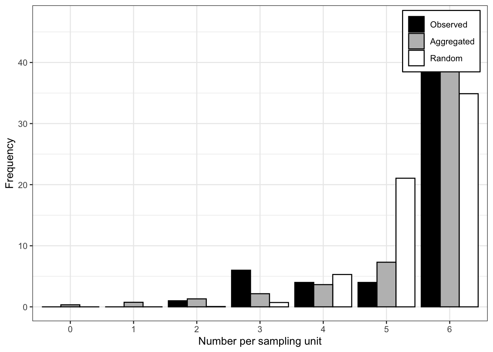
16.2.2.2 Aggregation indices
glm model
binom.tas = glm(cbind(count, group_size - count) ~ 1,
family = binomial,
data = tas)
summary(binom.tas)
Call:
glm(formula = cbind(count, group_size - count) ~ 1, family = binomial,
data = tas)
Coefficients:
Estimate Std. Error z value Pr(>|z|)
(Intercept) 2.2967 0.1799 12.77 <2e-16 ***
---
Signif. codes: 0 '***' 0.001 '**' 0.01 '*' 0.05 '.' 0.1 ' ' 1
(Dispersion parameter for binomial family taken to be 1)
Null deviance: 117.76 on 61 degrees of freedom
Residual deviance: 117.76 on 61 degrees of freedom
AIC: 152.12
Number of Fisher Scoring iterations: 5library(performance)
check_overdispersion(binom.tas)# Overdispersion test
dispersion ratio = 2.412
p-value = < 0.001epiphy(c-alpha test)
library(epiphy)
tas2 <- tas |>
mutate(i = count,
n = group_size) |> # create i vector
epiphy::incidence()
t <- agg_index(tas2, flavor = "incidence")
tFisher's index of dispersion:
(Version for incidence data)
2.348calpha.test(t)
C(alpha) test
data: t
z = 7.9886, p-value = 1.365e-1516.2.2.3 Binary power law
The Binary Power Law (BPL), introduced by (Hughes and Madden 1992), is a fundamental concept in plant pathology for describing the relationship between observed variance and the variance expected under a binomial distribution. The BPL is particularly useful for understanding spatial heterogeneity and overdispersion in plant disease incidence data (Madden et al. 2007a). The year 2017 marked the 25th anniversary of the introduction of the Binary Power Law by Hughes and Madden - over the past quarter-century, the BPL has been widely adopted and extensively cited in the field of plant pathology (Madden et al. 2018). The BPL provides a robust framework for analyzing and interpreting spatial patterns in plant pathology data. By comparing observed variance to binomial variance, researchers can infer the degree and nature of overdispersion in plant disease incidence.
The BPL relates two variances:
Observed Variance (V): \(V = \text{var}[X] = E[(X - np)^2]\)
Expected Binomial Variance (Vbin): \(V_{bin} = np(1 - p)\)
For proportions:
Observed Variance (v): \(v = \text{var}[x] = E[(x - p)^2]\)
Expected Binomial Variance (v_bin): \(v_{bin} = \frac{p(1 - p)}{n}\)
The binomial distribution assumes independent observations of \(X\), often interpreted as a random spatial pattern. If \(X\) follows a binomial distribution, then \(\beta = 1\) in the BPL equations. Deviations from this indicate spatial heterogeneity or overdispersion. The log-log transformationis often used in statistical analyses due to the linear relationship between the log-transformed variables. Interpretation is as follows: when \(\beta = 1\): Spatial heterogeneity is constant, indicating fixed overdispersion; when \(\beta > 1\): Overdispersion varies systematically with incidence, showing a change in spatial heterogeneity with disease incidence levels. In practice, researchers fit the log-log model to empirical data to estimate \(\beta\) and \(A_p\). This involves ordinary least squares (OLS) regression:
\[ \ln(v_j) = \ln(A_p) + \beta \ln\left[\frac{\hat{p}_j(1 - \hat{p}_j)}{n_j}\right] + \epsilon_j \]
where: - \(j\) refers to specific observations, - \(\hat{p}\) is the estimated proportion, - \(\epsilon_j\) is the residual error.
The intercept of the fitted model (\(\ln(A_p)\)) provides the scale parameter, and the slope (\(\beta\)) gives insight into the nature of spatial heterogeneity and overdispersion in the data.